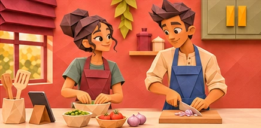
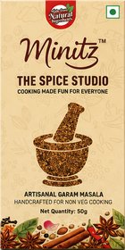
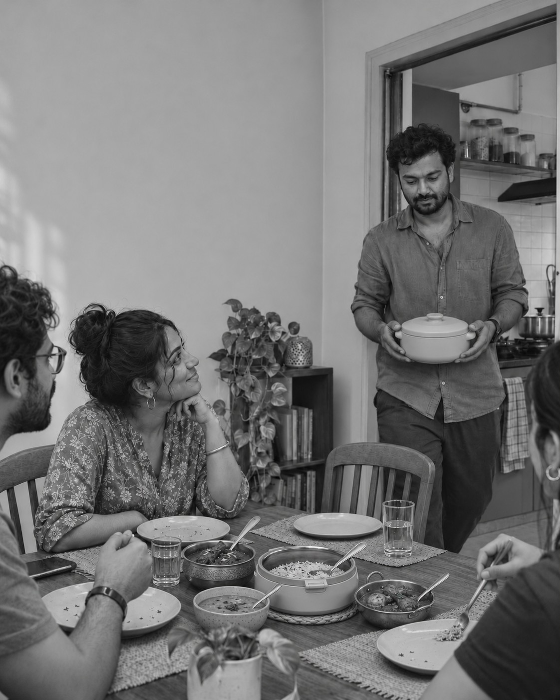

Korma for company
Write down what you adjust after tasting. Next time you can start with your version.
Download cooking notes ↓Cooking Made Fun for Everyone
A chicken curry, a Sunday biryani, or that korma you saved three weeks ago?


Handcrafted for non-veg cooking
₹375 · 50 g
15 ingredients, including almonds and rose petals.
Subtotal ₹375
Delivery and payment will appear here once checkout is connected.
“How did two musicians end up making masala?”
Anupam brings the same ear for balance to the kitchen that he brings to guitar. Dilip brings a drummer’s sense of timing and a food lover’s curiosity. Minitz grew out of their time cooking and making music together.
From their kitchen: cooking, music and the conversations in between.
“Korma? I caught the aroma from here.”
Start with a dish you’d be happy to eat. Keep a note of what you do differently.
Write down what you adjust after tasting. Next time you can start with your version.
Download cooking notes ↓Read the full recipe first and mark the steps you can prep ahead.
Download cooking notes ↓Start with a recipe you know. Change one thing and see what you think.
Download cooking notes ↓“Recipe says ‘to taste’. Ab?”
Start small. Taste, adjust and write down what worked for you.
One of you can read ahead and get the next ingredients ready while the other tends the pan. Swap next time.
Cook something you’re proud of? Send Anupam a photo on WhatsApp and tell him what you made. He’ll reply with a thought or a tip.
Any dish is welcome. If you’d like, try Minitz next time and tell us honestly what you thought. We’ll ask before featuring your photo and confirm whether you used Minitz before saying so.

Run a home-food business? Tell us what you make and explore a small collaboration with Minitz.
The enquiry link will open here when the Minitz contact is connected.
Anupam and Dilip are exploring small cooking and music gatherings at one of their homes in Delhi or Gurgaon, with 15–20 home cooks and home-food entrepreneurs.
Invitations and discounts are ideas for future challenges. Details will accompany each invitation.